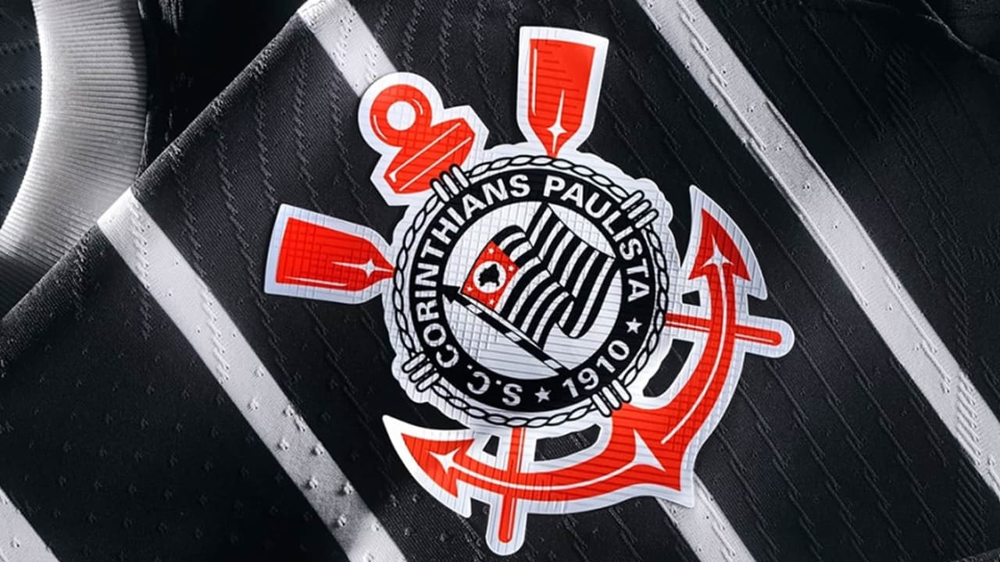

futebol
a origem
A atividade mais antiga que se assemelha ao futebol moderno da qual se tem conhecimento data dos séculos III e II a.C. Estes dados são baseados em um manual de exercícios correspondentes à dinastia Han da antiga China. O jogo era chamado ts'uh Kúh (cuju), e consistia em lançar uma bola com os pés para uma pequena rede.Uma variante incluía uma modalidade onde o jogador deveria passar pelo ataque dos seus adversários. Também no Extremo Oriente, embora cerca de cinco ou seis séculos depois do cuju, existia uma variante japonesa chamada kemari, que tinha um caráter mais cerimonial, sendo o objetivo do jogo manter uma bola no ar passando-a entre os jogadores. O kemari até hoje é praticado no Japão, em eventos culturais.No Mediterrâneo destacaram-se duas formas de jogo: o harpasto, em Roma, e o epísquiro, na Grécia, sobre o qual se tem pouca informação. O primeiro era disputado por duas equipes em um terreno retangular demarcado e dividido pela metade por uma linha. Os jogadores de cada equipe podiam passar uma pequena bola entre eles, e o objetivo do jogo era enviá-la ao campo contrário. Esta variante foi muito popular entre os anos 700 e 800, e, apesar de ter sido introduzida nas Ilhas Britânicas, sua ascensão até o futebol moderno é incerta.O epísquiro era feito por duas equipas, normalmente entre 12 e 14 jogadores cada, com uma bola, e segundo as regras era permitido o uso das mãos.
seleções
Em nível de seleções nacionais, o torneio mais importante é a Copa do Mundo FIFA de Futebol, que é disputada desde 1930.Antes da criação da Copa do Mundo, particularmente durante os anos 1920, a competição de futebol dos Jogos Olímpicos era considerada a principal competição do desporto, ainda que atualmente se mantenha como um torneio secundário onde se permitem jogadores menores de 23 anos, com até três jogadores que extrapolem esse limite de idade por equipe. No futebol feminino, o equivalente à Copa do Mundo é a Copa do Mundo de Futebol FemininoA nível das confederações da FIFA, os torneios mais importantes são a Copa América (América do Sul) e Eurocopa (Europa) e; embora com menos importância, a Copa Africana de Nações (África) a Copa Ouro da CONCACAF (Américas do Norte, Central e Caribe), a Copa Asiática (Ásia) e a Copa das Nações da OFC (Oceania).

principais times
Os principais times de futebol, tanto a nível nacional como internacional, incluem grandes clubes com tradição e sucesso. No Brasil, alguns dos mais populares incluem Flamengo, São Paulo, Palmeiras, Corinthians e Santos. Internacionalmente, os times mais renomados são Real Madrid, Barcelona, Bayern de Munique, Liverpool e Manchester United.
Principais times de futebol no Brasil: Flamengo: Um dos clubes mais populares e com maior torcida do país, conhecido por sua rica história e conquistas. São Paulo: Um dos maiores vencedores do Campeonato Brasileiro e com forte presença na Libertadores. Palmeiras: Um dos times mais recentes campeões do Brasileirão e que tem conquistado títulos importantes nos últimos anos. Corinthians: Um dos clubes mais tradicionais e com grande base de torcedores, conhecido por sua cultura e paixão pelo futebol. Santos: Time com grande história e craques, incluindo Pelé, e que conquistou títulos importantes no Brasil e no exterior.
